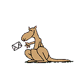

“Ñapa” est un mot d’Hispano-Amérique qui a plusieurs significations; l’une d’entre elles est ce que l’on pourrait traduire en français par “bricoles”.
C’est donc un blog, à la fois pour évoquer certains trucs variés et certaines bricoles diverses en informatique unixienne à forte tendance minimaliste. Cela me permet aussi de tester ça, s'inspirant de ça.
Pas du tout codeur, encore moins pure codiste, simplement un être encourageant et œuvrant pour (et à sa manière) les systèmes UNIX, et une informatique minimaliste s'avérant d’une certaine manière écologique.
Aussi, y a pas toujours du bon françois, y a du franglish, du castillan et peut-être même de l’euskerra. M’en voulez pas!
Pour tout commentaire, ou question :

E(tiret du milieu)RAM(chez)E(point)EMAIL
Ici, que les cookies nécessaires au bon fonctionnement sont utilisés
(je suppose et c'est pas sûr) par l'hébergeur et y a pas de collecte de données perso!
Venga! Gero arte!
* * * * * * *